10k A375 Cells Transduced with (1) Non-Target and (1) Target sgRNA#
Dataset: 10k A375 Cells Transduced with (1) Non-Target and (1) Target sgRNA, Dual Indexed
The detailed description of this dataset can be found here.
Preparation#
Download fastq files.
$ wget https://cg.10xgenomics.com/samples/cell-exp/4.0.0/SC3_v3_NextGem_DI_CRISPR_10K/SC3_v3_NextGem_DI_CRISPR_10K_fastqs.tar
$ tar xvf SC3_v3_NextGem_DI_PBMC_CSP_1K/SC3_v3_NextGem_DI_PBMC_CSP_1K_fastqs.tar
Combine reads of different lanes.
$ cat SC3_v3_NextGem_DI_CRISPR_10K_fastqs/SC3_v3_NextGem_DI_CRISPR_10K_crispr_fastqs/SC3_v3_NextGem_DI_CRISPR_10K_crispr_S1_L00?_R1_001.fastq.gz > SC3_v3_NextGem_DI_CRISPR_10K_crispr_S1_combined_R1_001.fastq.gz
$ cat SC3_v3_NextGem_DI_CRISPR_10K_fastqs/SC3_v3_NextGem_DI_CRISPR_10K_crispr_fastqs/SC3_v3_NextGem_DI_CRISPR_10K_crispr_S1_L00?_R2_001.fastq.gz > SC3_v3_NextGem_DI_CRISPR_10K_crispr_S1_combined_R2_001.fastq.gz
Download cell barcode info. These are the cell-associated barcodes in this single cell RNA-Seq library.
$ wget https://cf.10xgenomics.com/samples/cell-exp/4.0.0/SC3_v3_NextGem_DI_CRISPR_10K/SC3_v3_NextGem_DI_CRISPR_10K_filtered_feature_bc_matrix.tar.gz
$ tar zxvf SC3_v3_NextGem_DI_CRISPR_10K_filtered_feature_bc_matrix.tar.gz
Inspect cell barcodes.
$ gzip -dc filtered_feature_bc_matrix/barcodes.tsv.gz | head
AAACCCACACATAGCT-1
AAACCCACATCATGAC-1
AAACCCAGTCATCGGC-1
AAACCCAGTCGCACAC-1
AAACCCAGTGCAACGA-1
AAACCCATCAAGCGTT-1
AAACCCATCAGATGCT-1
AAACCCATCATCTACT-1
AAACCCATCCTTATGT-1
AAACCCATCTCGGCTT-1
Prepare feature barcodes.
$ wget https://cf.10xgenomics.com/samples/cell-exp/4.0.0/SC3_v3_NextGem_DI_CRISPR_10K/SC3_v3_NextGem_DI_CRISPR_10K_feature_ref.csv
Inspect feature barcode info.
$ cat SC3_v3_NextGem_DI_CRISPR_10K_feature_ref.csv
id,name,read,pattern,sequence,feature_type,target_gene_id,target_gene_name
RAB1A-2,RAB1A-2,R2,(BC)GTTTAAGAGCTAAGCTGGAA,GCCGGCGAACCAGGAAATA,CRISPR Guide Capture,ENSG00000138069,RAB1A
NON_TARGET-1,NON_TARGET-1,R2,(BC)GTTTAAGAGCTAAGCTGGAA,AACGTGCTGACGATGCGGGC,CRISPR Guide Capture,Non-Targeting,Non-Targeting
Clean up.
$ cut -d ',' -f1,5 SC3_v3_NextGem_DI_CRISPR_10K_feature_ref.csv | sed 's/,/\t/g' | tail -2 > SC3_v3_NextGem_DI_CRISPR_10K_feature_ref.tsv
$ cat SC3_v3_NextGem_DI_CRISPR_10K_feature_ref.tsv
RAB1A-2 GCCGGCGAACCAGGAAATA
NON_TARGET-1 AACGTGCTGACGATGCGGGC
QC#
Sample the first 20,000 (set by -n, default 100,000) read pairs
for quality control. Use -t to set the number of threads. By
default, the diagnostic results and plots are generated in the qc
directory (set by --output_directory), and full length of read 1 and
read 2 are searched against reference cell and feature barcodes,
respectively. The per base content of both read pairs and the
distribution of matched barcode positions are summarized. Use -r1_c
and/or -r2_c to limit the search range. Use -cb_n and/or
-fb_n to set the mismatch tolerance for cell and feature barcode
matching (default 3).
$ fba qc \
-1 SC3_v3_NextGem_DI_CRISPR_10K_crispr_S1_combined_R1_001.fastq.gz \
-2 SC3_v3_NextGem_DI_CRISPR_10K_crispr_S1_combined_R2_001.fastq.gz \
-w filtered_feature_bc_matrix/barcodes.tsv.gz \
-f SC3_v3_NextGem_DI_CRISPR_10K_feature_ref.tsv \
-r1_c 0,16 \
-n 20000
This library is built using the Chromium Next GEM Single Cell 3ʹ Reagent Kits v3.1 (Dual Index) with Feature Barcode technology for CRISPR Screening and sequenced on Illumina NovaSeq 6000. The first 16 bases are cell barcodes and the following 12 bases are UMIs. Based on the base content plot, the GC content of cell barcodes are quite even. The UMIs are slightly T enriched.
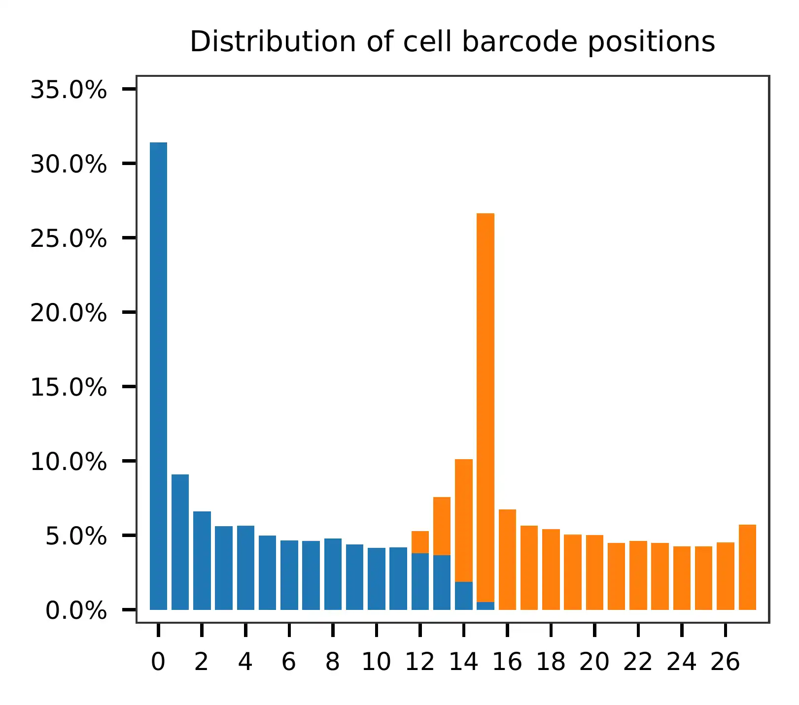 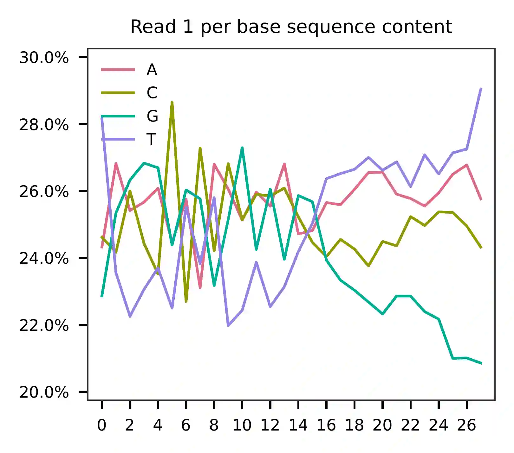{kind=link}
{kind=link}
As for read 2, based on the per base content, it suggests that bases 0-31 are constant and we can almost read the bases. They are actually Template Switch Oligo (TSO) sequence. Starting from base 32, it seems there are two genotypes for the reads we have sampled.
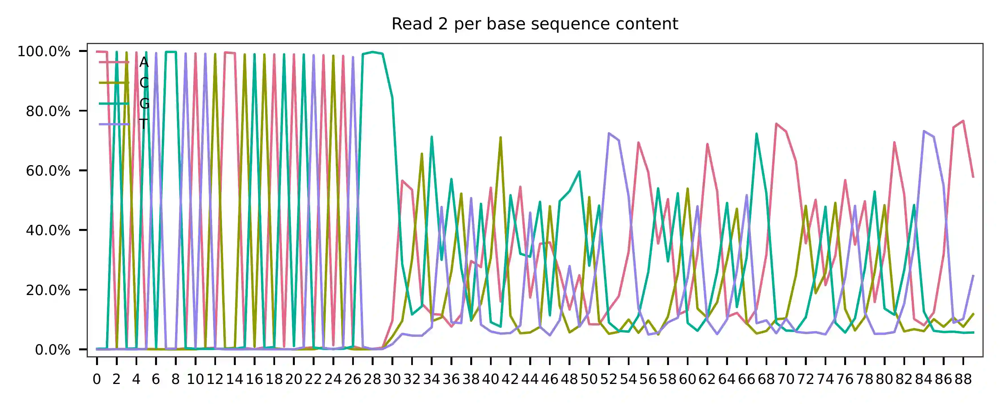 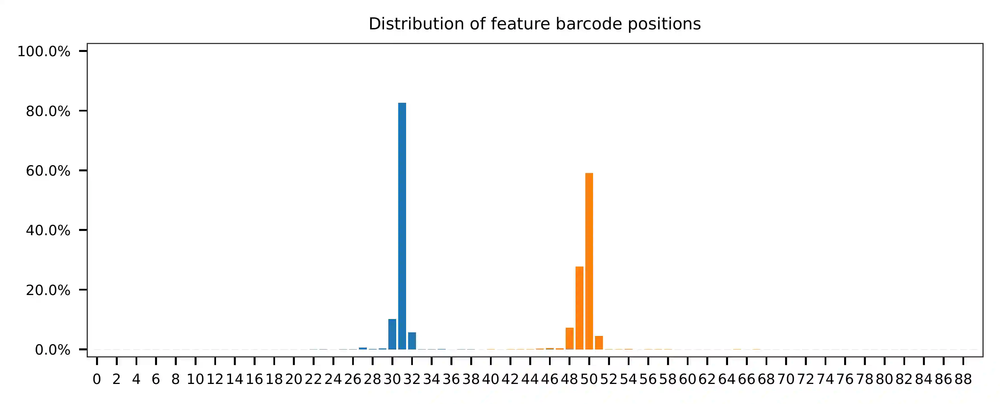{kind=link}
{kind=link}
The detailed qc results are stored in
feature_barcoding_output.tsv.gz file. matching_pos columns
indicate the matched positions on reads. matching_description
columns indicate mismatches in substitutions:insertions:deletions
format.
$ gzip -dc qc/feature_barcoding_output.tsv.gz | head
read1_seq cell_barcode cb_matching_pos cb_matching_description read2_seq feature_barcode fb_matching_pos fb_matching_description
CNCCACACACGTGTTAatgagtactagc CCTCACACACGTAGTT 0:15 2:0:1 AAGCAGTGGTATCAACGCAGAGTACATGGGATAGGTTTGGTCCTAGCCTTTCTATTAGCTCTTAGTAAGATTACACATGCAAGCATCCCC no_match NA NA
GNCGCGATCAGCATTActtttgtcaccc GTCGCGAAGAGCATTA 0:16 3:0:0 AAGCAGTGGTATCAACGCAGAGTACATGGGGACTGTTGCTGGTGTGTACTTGCTAAGGTTTATGTCAGTTCAAGATTATAAGCCCCCCAG no_match NA NA
TNGGAAGGTAAGTGTAatcgagggaaca TGGGAAGCAAAGTGTA 0:16 3:0:0 AAGCAGTGGTATCAACGCAGAGTACATGGGGGCCGGCGAACCAGGAAATAGTTTAAGAGCTAAGCTGGAAACAGCATAGCAAGTTTAAAT RAB1A-2_GCCGGCGAACCAGGAAATAG 31:51 0:0:0
CNCCCAAGTCGATAGGgagcgcaagcat CCCAACTCACGATAGG 2:16 1:0:2 AAGCAGTGGTATCAACGCAGAGTACATGGGGGCCGGCGAACCAGGAAATAGTTTAAGAGCTAAGCTGGAAACAGCATAGCAAGTTTAAAT RAB1A-2_GCCGGCGAACCAGGAAATAG 31:51 0:0:0
CNCACTGCAAACGGTGggcgtaaatgag CTCACTGGTAACGGTG 0:16 3:0:0 AAGCAGTGGTATCAACGCAGAGTACATGGGGGCCGGCGAACCAGGAAATAGTTTAAGAGCTAAGCTGGAAACAGCATAGCAAGTTTAAAT RAB1A-2_GCCGGCGAACCAGGAAATAG 31:51 0:0:0
ANCATCACAGGCGCTTgtcccactatat AGCATCAGTGGCGCTT 0:16 3:0:0 AAGCAGTGGTATCAACGCAGAGTACATGGGGGCCGGCGAACCAGGAAATAGTTTAAGAGCTAAGCTGGAAACAGCATAGCAAGTTTAAAT RAB1A-2_GCCGGCGAACCAGGAAATAG 31:51 0:0:0
ANACGAACACTTTCATccaaaagaagtt AAACGAAGTCTTTCAT 0:16 3:0:0 AAGCAGTGGTATCAACGCAGAGTACATGGGGGCCGGCGAACCAGGAAATAGTTTAAGAGCTAAGCTGGAAACAGCATAGCAAGTTTAAAT RAB1A-2_GCCGGCGAACCAGGAAATAG 31:51 0:0:0
ANCAACCAGTATCGTTgaaatcctggta AACAACCTCTATCGTT 0:16 3:0:0 AAGCAGTGGTATCAACGCAGAGTACATGGGGAACGTGCTGACGATGCGGGCGTTTAAGAGCTAAGCTGGAAACAGCATAGCAAGTTTAAA NON_TARGET-1_AACGTGCTGACGATGCGGGC 31:51 0:0:0
GNAGCCCGTACCACATgggcccagtatg GAAGCCCCAACCACAT 0:16 3:0:0 AAGCAGTGGTATCAACGCAGAGTACATGGGGGCCGGCGAACCAGGAAATAGTTTAAGAGCTAAGCTGGAAACAGCATAGCAAGTTTAAAT RAB1A-2_GCCGGCGAACCAGGAAATAG 31:51 0:0:0
Barcode extraction#
Although the lengths of the two feature barcodes are one base different, they all start at the same position on read 2. For the purpose of feature barcode identification, let’s include one extra downstream base (G) for the RAB1A-2 feature barcode to make their lengths equal.
$ cat SC3_v3_NextGem_DI_CRISPR_10K_feature_ref_edited.tsv
RAB1A-2 GCCGGCGAACCAGGAAATAG
NON_TARGET-1 AACGTGCTGACGATGCGGGC
Search ranges are set to 0,16 on read 1 and 31,51 on read 2. Two
mismatches for cell and feature barcodes (-cb_m, -cf_m) are
allowed.
$ fba extract \
-1 SC3_v3_NextGem_DI_CRISPR_10K_crispr_S1_combined_R1_001.fastq.gz \
-2 SC3_v3_NextGem_DI_CRISPR_10K_crispr_S1_combined_R2_001.fastq.gz \
-w filtered_feature_bc_matrix/barcodes.tsv.gz \
-f SC3_v3_NextGem_DI_CRISPR_10K_feature_ref_edited.tsv \
-o feature_barcoding_output.tsv.gz \
-r1_c 0,16 \
-r2_c 31,51 \
-cb_m 2 \
-fb_m 2
Preview of result.
$ gzip -dc feature_barcoding_output.tsv.gz | head
read1_seq cell_barcode cb_num_mismatches read2_seq feature_barcode fb_num_mismatches
GGCAGTCTCCGTTACTtatccagccttc GGCAGTCTCGGTAACT 2 aagcagtggtatcaacgcagagtacatggggGCCGGCGAACCAGGAAATAGtttaagagctaagctggaaacagcatagcaagtttaaat RAB1A-2_GCCGGCGAACCAGGAAATAG 0
TTACGTTGTGAATCGGgtggggctcttc TTACGTTCAGAATCGG 2 aagcagtggtatcaacgcagagtacatggggAACGTGCTGACGATGCGGGCgtttaagagctaagctggaaacagcatagcaagtttaaa NON_TARGET-1_AACGTGCTGACGATGCGGGC 0
TCGGGCAAGGATTGGTttctactcggaa TCGGGCATCGATTGGT 2 aagcagtggtatcaacgcagagtacatgggaACGTGCTGACGATGCGGGCGtttaagagctaagctggaaacagcatagcaagtttaaat NON_TARGET-1_AACGTGCTGACGATGCGGGC 2
ACAACCACACATCTAGcggcatcatact ACAACCAGTCATCTAG 2 aagcagtggtatcaacgcagagtacatggggCCGGCGAACCAGGAAATAGTttaagagctaagctggaaacagcatagcaagtttaaata RAB1A-2_GCCGGCGAACCAGGAAATAG 2
AGACTCAAGTGCTAGAacagaactggtg AGACTCATCTGCTAGA 2 aagcagtggtatcaacgcagagtacatggggAACGTGCTGACGATGCGGGCgtttaagagctaagctggaaacagcatagcaagtttaaa NON_TARGET-1_AACGTGCTGACGATGCGGGC 0
GAGTTGTTCGAACATTctgcccgacgtc GAGTTGTAGGAACATT 2 aagcagtggtatcaacgcagagtacatggggAACGTGCTGACGATGCGGGCgtttaagagctaagctggaaacagcatagcaagtttaaa NON_TARGET-1_AACGTGCTGACGATGCGGGC 0
AGACTCAGTGGCACAAtgtcagaattca AGACTCACAGGCACAA 2 aagcagtggtatcaacgcagagtacatggggGCCGGCGAACCAGGAAATAGtttaagagctaagctggaaacagcatagcaagtttaaat RAB1A-2_GCCGGCGAACCAGGAAATAG 0
TGCACGGAGGATAACCcgtgcacgtaca TGCACGGTCGATAACC 2 aagcagtggtatcaacgcagagtacatggggGCCGGCGAACCAGGAAATAGtttaagagctaagctggaaacagcatagcaagtttaaat RAB1A-2_GCCGGCGAACCAGGAAATAG 0
CGTAGTAGTAACACGGaagagggaactg CGTAGTAGTAACGCGA 2 aagcagtggtatcaacgcagagtacatggggAACGTGCTGACGATGCGGGCgtttaagagctaagctggaaacagcatagcaagtttaaa NON_TARGET-1_AACGTGCTGACGATGCGGGC 0
Result summary.
64.7% (93,795,979 out of 145,032,428) of total read pairs have valid cell and feature barcodes. Majority of fragments in this library have correct structure.
2021-02-15 01:51:59,262 - fba.__main__ - INFO - fba version: 0.0.7
2021-02-15 01:51:59,262 - fba.__main__ - INFO - Initiating logging ...
2021-02-15 01:51:59,262 - fba.__main__ - INFO - Python version: 3.7
2021-02-15 01:51:59,262 - fba.__main__ - INFO - Using extract subcommand ...
2021-02-15 01:51:59,276 - fba.levenshtein - INFO - Number of reference cell barcodes: 11,791
2021-02-15 01:51:59,276 - fba.levenshtein - INFO - Number of reference feature barcodes: 2
2021-02-15 01:51:59,276 - fba.levenshtein - INFO - Read 1 coordinates to search: [0, 16)
2021-02-15 01:51:59,276 - fba.levenshtein - INFO - Read 2 coordinates to search: [31, 51)
2021-02-15 01:51:59,276 - fba.levenshtein - INFO - Cell barcode maximum number of mismatches: 2
2021-02-15 01:51:59,276 - fba.levenshtein - INFO - Feature barcode maximum number of mismatches: 2
2021-02-15 01:51:59,276 - fba.levenshtein - INFO - Read 1 maximum number of N allowed: 3
2021-02-15 01:51:59,276 - fba.levenshtein - INFO - Read 2 maximum number of N allowed: 3
2021-02-15 01:52:02,510 - fba.levenshtein - INFO - Matching ...
2021-02-15 02:20:39,807 - fba.levenshtein - INFO - Read pairs processed: 10,000,000
2021-02-15 02:49:04,142 - fba.levenshtein - INFO - Read pairs processed: 20,000,000
2021-02-15 03:17:27,422 - fba.levenshtein - INFO - Read pairs processed: 30,000,000
2021-02-15 03:45:54,615 - fba.levenshtein - INFO - Read pairs processed: 40,000,000
2021-02-15 04:14:23,049 - fba.levenshtein - INFO - Read pairs processed: 50,000,000
2021-02-15 04:42:49,377 - fba.levenshtein - INFO - Read pairs processed: 60,000,000
2021-02-15 05:11:15,736 - fba.levenshtein - INFO - Read pairs processed: 70,000,000
2021-02-15 05:39:43,011 - fba.levenshtein - INFO - Read pairs processed: 80,000,000
2021-02-15 06:08:09,940 - fba.levenshtein - INFO - Read pairs processed: 90,000,000
2021-02-15 06:36:39,658 - fba.levenshtein - INFO - Read pairs processed: 100,000,000
2021-02-15 07:05:08,115 - fba.levenshtein - INFO - Read pairs processed: 110,000,000
2021-02-15 07:33:32,101 - fba.levenshtein - INFO - Read pairs processed: 120,000,000
2021-02-15 08:02:01,233 - fba.levenshtein - INFO - Read pairs processed: 130,000,000
2021-02-15 08:30:29,660 - fba.levenshtein - INFO - Read pairs processed: 140,000,000
2021-02-15 08:44:47,038 - fba.levenshtein - INFO - Number of read pairs processed: 145,032,428
2021-02-15 08:44:47,038 - fba.levenshtein - INFO - Number of read pairs w/ valid barcodes: 93,795,979
2021-02-15 08:44:47,153 - fba.__main__ - INFO - Done.
Matrix generation#
Only fragments with correct (passed the criteria) cell and feature
barcodes are included. UMI removal is powered by UMI-tools (Smith, T.,
et al. 2017. Genome Res. 27, 491–499.). Use -us to set the UMI
starting position on read 1 (default 16). Use -ul to set the UMI
length (default 12). Fragments with UMI length less than this value
are discarded. UMI deduplication method is set by -ud (default
directional). Use -um to set UMI deduplication mismatch
threshold (default 1).
The generated feature count matrix can be easily imported into well-established single cell analysis packages: Seruat and Scanpy.
$ fba count \
-i feature_barcoding_output.tsv.gz \
-o matrix_featurecount.csv.gz \
-us 16 \
-ul 12 \
-um 1 \
-ud directional
Result summary.
7.6% (7,145,799 out of 93,795,979) of read pairs with valid cell and feature barcodes are unique fragments. 4.9% (7,143,943 out of 145,032,428) of total sequenced read pairs contribute to the final matrix.
2020-10-20 04:47:32,738 - fba.__main__ - INFO - fba version: 0.0.7
2020-10-20 04:47:32,738 - fba.__main__ - INFO - Initiating logging ...
2020-10-20 04:47:32,738 - fba.__main__ - INFO - Python version: 3.7
2020-10-20 04:47:32,738 - fba.__main__ - INFO - Using count subcommand ...
2020-10-20 04:47:32,738 - fba.count - INFO - UMI-tools version: 1.0.1
2020-10-20 04:47:32,795 - fba.count - INFO - UMI starting position on read 1: 16
2020-10-20 04:47:32,795 - fba.count - INFO - UMI length: 12
2020-10-20 04:47:32,795 - fba.count - INFO - UMI-tools deduplication threshold: 1
2020-10-20 04:47:32,795 - fba.count - INFO - UMI-tools deduplication method: directional
2020-10-20 04:47:32,795 - fba.count - INFO - Header line: read1_seq cell_barcode cb_num_mismatches read2_seq feature_barcode fb_num_mismatches
2020-10-20 04:51:50,886 - fba.count - INFO - Number of lines processed: 93,795,979
2020-10-20 04:51:50,893 - fba.count - INFO - Number of cell barcodes detected: 11,758
2020-10-20 04:51:50,894 - fba.count - INFO - Number of features detected: 2
2020-10-20 05:00:42,298 - fba.count - INFO - Total UMIs after deduplication: 7,145,799
2020-10-20 05:00:42,320 - fba.count - INFO - Median number of UMIs per cell: 477.0
2020-10-20 05:00:42,434 - fba.__main__ - INFO - Done.
Demultiplexing#
Negative binomial distribution#
Cells are classified based on the feature count matrix. Demultiplexing
method 1 (set by -dm) is implemented based on the method
described by Stoeckius, M., et al. (2018) with some modifications. A
cell identity matrix is generated in the output directory (set by
--output_directory, default demultiplexed): 0 means negative, 1
means positive. Use -q to set the quantile threshold for
demulitplexing. Set -v to create visualization plots.
$ fba demultiplex \
-i matrix_featurecount.csv.gz \
--output_directory demultiplexed \
-dm 1 \
-q 0.75 \
-v
Heatmap of the relative abundance of features (sgRNAs) across all cells. Each column represents a single cell.

t-SNE embedding of cells based on the abundance of features (sgRNAs, no transcriptome information used). Colors indicate the sgRNA status for each cell, as called by FBA.

Gaussian mixture model#
The implementation of demultiplexing method 2 (set by -dm) is
inspired by the method described on 10x Genomics’ website. Use -p
to set the probability threshold for demulitplexing (default 0.9).
$ fba demultiplex \
-i matrix_featurecount.csv.gz \
-dm 2 \
-v
2021-10-04 14:14:15,659 - fba.__main__ - INFO - fba version: 0.0.x
2021-10-04 14:14:15,659 - fba.__main__ - INFO - Initiating logging ...
2021-10-04 14:14:15,659 - fba.__main__ - INFO - Python version: 3.8
2021-10-04 14:14:15,659 - fba.__main__ - INFO - Using demultiplex subcommand ...
2021-10-04 14:14:36,166 - fba.__main__ - INFO - Skipping arguments: "-q/--quantile", "-cm/--clustering_method"
2021-10-04 14:14:36,166 - fba.demultiplex - INFO - Output directory: demultiplexed
2021-10-04 14:14:36,166 - fba.demultiplex - INFO - Demultiplexing method: 2
2021-10-04 14:14:36,166 - fba.demultiplex - INFO - UMI normalization method: clr
2021-10-04 14:14:36,167 - fba.demultiplex - INFO - Visualization: On
2021-10-04 14:14:36,167 - fba.demultiplex - INFO - Visualization method: tsne
2021-10-04 14:14:36,167 - fba.demultiplex - INFO - Loading feature count matrix: matrix_featurecount.csv.gz ...
2021-10-04 14:14:37,875 - fba.demultiplex - INFO - Number of cells: 11,758
2021-10-04 14:14:37,875 - fba.demultiplex - INFO - Number of positive cells for a feature to be included: 200
2021-10-04 14:14:37,920 - fba.demultiplex - INFO - Number of features: 2 / 2 (after filtering / original in the matrix)
2021-10-04 14:14:37,920 - fba.demultiplex - INFO - Features: NON_TARGET-1 RAB1A-2
2021-10-04 14:14:37,920 - fba.demultiplex - INFO - Total UMIs: 7,145,799 / 7,145,799
2021-10-04 14:14:37,942 - fba.demultiplex - INFO - Median number of UMIs per cell: 477.0 / 477.0
2021-10-04 14:14:37,942 - fba.demultiplex - INFO - Demultiplexing ...
2021-10-04 14:14:38,418 - fba.demultiplex - INFO - Generating heatmap ...
2021-10-04 14:14:42,078 - fba.demultiplex - INFO - Embedding ...
2021-10-04 14:15:24,288 - fba.__main__ - INFO - Done.
Heatmap of the relative abundance of features (sgRNAs) across all cells. Each column represents a single cell.

t-SNE embedding of cells based on the abundance of features (sgRNAs, no transcriptome information used). Colors indicate the sgRNA status for each cell, as called by FBA.

UMI distribution and model fitting threshold:
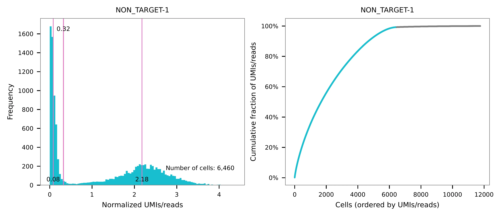 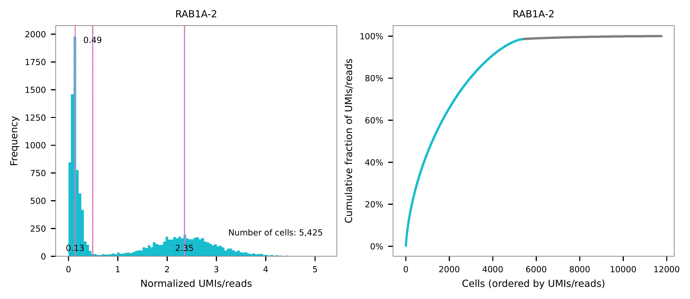{kind=link}
{kind=link}
Poisson-Gaussian mixture model#
The implementation of demultiplexing method 3 (set by -dm) is
inspired by Replogle, M., et al. (2021). Use -p to set the
probability threshold for demulitplexing (default 0.5).
$ fba demultiplex \
-i matrix_featurecount.csv.gz \
-dm 3 \
-v
2021-12-20 00:13:17,443 - fba.__main__ - INFO - fba version: 0.0.x
2021-12-20 00:13:17,443 - fba.__main__ - INFO - Initiating logging ...
2021-12-20 00:13:17,443 - fba.__main__ - INFO - Python version: 3.9
2021-12-20 00:13:17,443 - fba.__main__ - INFO - Using demultiplex subcommand ...
2021-12-20 00:13:19,774 - fba.__main__ - INFO - Skipping arguments: "-q/--quantile", "-cm/--clustering_method"
2021-12-20 00:13:19,774 - fba.demultiplex - INFO - Output directory: demultiplexed
2021-12-20 00:13:19,774 - fba.demultiplex - INFO - Demultiplexing method: 3
2021-12-20 00:13:19,774 - fba.demultiplex - INFO - UMI normalization method: clr
2021-12-20 00:13:19,774 - fba.demultiplex - INFO - Visualization: On
2021-12-20 00:13:19,774 - fba.demultiplex - INFO - Visualization method: tsne
2021-12-20 00:13:19,774 - fba.demultiplex - INFO - Loading feature count matrix: matrix_featurecount.csv.gz ...
2021-12-20 00:13:20,479 - fba.demultiplex - INFO - Number of cells: 11,758
2021-12-20 00:13:20,479 - fba.demultiplex - INFO - Number of positive cells for a feature to be included: 200
2021-12-20 00:13:20,497 - fba.demultiplex - INFO - Number of features: 2 / 2 (after filtering / original in the matrix)
2021-12-20 00:13:20,497 - fba.demultiplex - INFO - Features: NON_TARGET-1 RAB1A-2
2021-12-20 00:13:20,497 - fba.demultiplex - INFO - Total UMIs: 7,145,799 / 7,145,799
2021-12-20 00:13:20,506 - fba.demultiplex - INFO - Median number of UMIs per cell: 477.0 / 477.0
2021-12-20 00:13:20,506 - fba.demultiplex - INFO - Demultiplexing ...
2021-12-20 00:13:21,930 - fba.demultiplex - INFO - Generating heatmap ...
2021-12-20 00:13:23,070 - fba.demultiplex - INFO - Embedding ...
2021-12-20 00:13:41,271 - fba.__main__ - INFO - Done.
Heatmap of the relative abundance of features (sgRNAs) across all cells. Each column represents a single cell.
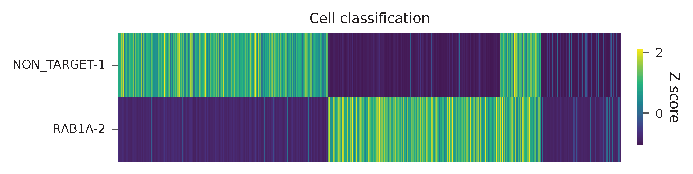{kind=link}
t-SNE embedding of cells based on the abundance of features (sgRNAs, no transcriptome information used). Colors indicate the sgRNA status for each cell, as called by FBA.
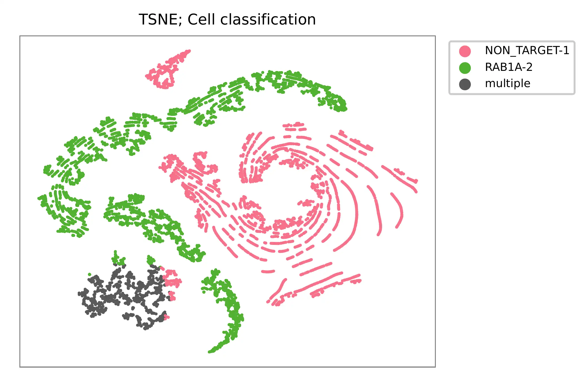{kind=link}
UMI distribution and model fitting threshold:
 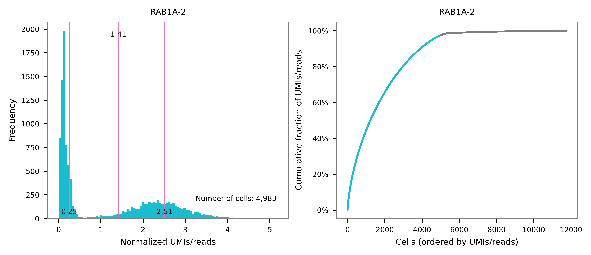
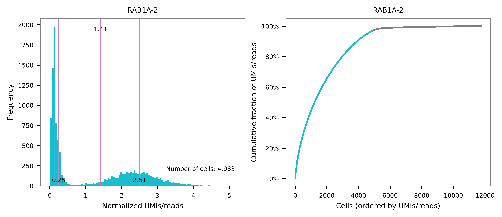
{kind=link}
Kernel density estimation#
CRISPR perturbatons are demultiplexed based on the abundance of
features. Demultiplexing method 4 is implemented based on the method
described in McGinnis, C., et al. (2019) with some modifications.
$ fba demultiplex \
-i matrix_featurecount.csv.gz \
-dm 4 \
-v
2021-12-26 18:11:16,685 - fba.__main__ - INFO - fba version: 0.0.x
2021-12-26 18:11:16,685 - fba.__main__ - INFO - Initiating logging ...
2021-12-26 18:11:16,686 - fba.__main__ - INFO - Python version: 3.9
2021-12-26 18:11:16,686 - fba.__main__ - INFO - Using demultiplex subcommand ...
2021-12-26 18:11:19,633 - fba.__main__ - INFO - Skipping arguments: "-q/--quantile", "-cm/--clustering_method", "-p/--prob"
2021-12-26 18:11:19,633 - fba.demultiplex - INFO - Output directory: demultiplexed
2021-12-26 18:11:19,633 - fba.demultiplex - INFO - Demultiplexing method: 4
2021-12-26 18:11:19,633 - fba.demultiplex - INFO - UMI normalization method: clr
2021-12-26 18:11:19,633 - fba.demultiplex - INFO - Visualization: On
2021-12-26 18:11:19,633 - fba.demultiplex - INFO - Visualization method: tsne
2021-12-26 18:11:19,633 - fba.demultiplex - INFO - Loading feature count matrix: matrix_featurecount.csv.gz ...
2021-12-26 18:11:19,745 - fba.demultiplex - INFO - Number of cells: 11,758
2021-12-26 18:11:19,745 - fba.demultiplex - INFO - Number of positive cells for a feature to be included: 200
2021-12-26 18:11:19,762 - fba.demultiplex - INFO - Number of features: 2 / 2 (after filtering / original in the matrix)
2021-12-26 18:11:19,762 - fba.demultiplex - INFO - Features: NON_TARGET-1 RAB1A-2
2021-12-26 18:11:19,762 - fba.demultiplex - INFO - Total UMIs: 7,145,799 / 7,145,799
2021-12-26 18:11:19,771 - fba.demultiplex - INFO - Median number of UMIs per cell: 477.0 / 477.0
2021-12-26 18:11:19,771 - fba.demultiplex - INFO - Demultiplexing ...
2021-12-26 18:11:22,049 - fba.demultiplex - INFO - Quantile cutoff: 18
2021-12-26 18:11:23,703 - fba.demultiplex - INFO - Generating heatmap ...
2021-12-26 18:11:24,911 - fba.demultiplex - INFO - Embedding ...
2021-12-26 18:11:44,219 - fba.__main__ - INFO - Done.
Heatmap of the relative abundance of features (sgRNAs) across all cells. Each column represents a single cell.
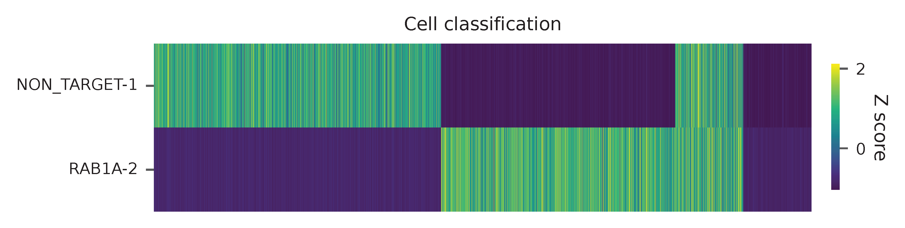{kind=link}
t-SNE embedding of cells based on the abundance of features (sgRNAs, no transcriptome information used). Colors indicate the sgRNA status for each cell, as called by FBA.

UMI distribution and model fitting threshold:
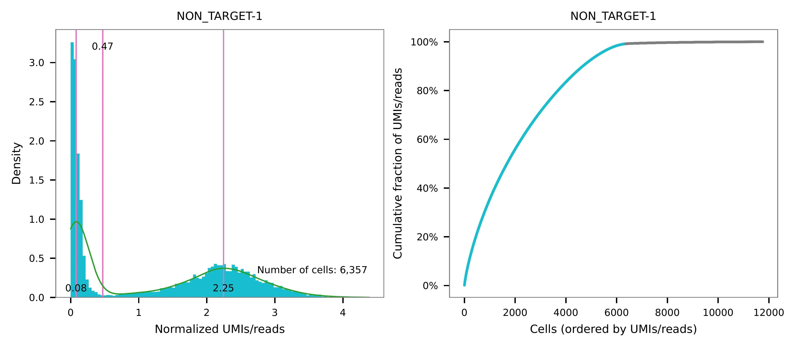{kind=link}

Knee point#
Method 1#
Cells are demultiplexed based on the abundance of features (sgRNAs).
Demultiplexing method 5-2019 is our previous implementation, which
tries to determine perturbations in the cells through the detection of
inflection point on the feature UMI saturation curve (Xie, S., et al.
(2019)).
$ fba demultiplex \
-i matrix_featurecount.csv.gz \
-dm 5-2019 \
-v
2022-01-02 13:57:51,792 - fba.__main__ - INFO - fba version: 0.0.x
2022-01-02 13:57:51,792 - fba.__main__ - INFO - Initiating logging ...
2022-01-02 13:57:51,792 - fba.__main__ - INFO - Python version: 3.9
2022-01-02 13:57:51,792 - fba.__main__ - INFO - Using demultiplex subcommand ...
2022-01-02 13:57:54,328 - fba.__main__ - INFO - Skipping arguments: "-q/--quantile", "-cm/--clustering_method", "-p/--prob"
2022-01-02 13:57:54,329 - fba.demultiplex - INFO - Output directory: demultiplexed
2022-01-02 13:57:54,329 - fba.demultiplex - INFO - Demultiplexing method: 5-2019
2022-01-02 13:57:54,329 - fba.demultiplex - INFO - UMI normalization method: clr
2022-01-02 13:57:54,329 - fba.demultiplex - INFO - Visualization: On
2022-01-02 13:57:54,329 - fba.demultiplex - INFO - Visualization method: tsne
2022-01-02 13:57:54,329 - fba.demultiplex - INFO - Loading feature count matrix: raw/m2_2020-10-20/matrix_featurecount.csv.gz ...
2022-01-02 13:57:54,444 - fba.demultiplex - INFO - Number of cells: 11,758
2022-01-02 13:57:54,444 - fba.demultiplex - INFO - Number of positive cells for a feature to be included: 200
2022-01-02 13:57:54,464 - fba.demultiplex - INFO - Number of features: 2 / 2 (after filtering / original in the matrix)
2022-01-02 13:57:54,464 - fba.demultiplex - INFO - Features: NON_TARGET-1 RAB1A-2
2022-01-02 13:57:54,464 - fba.demultiplex - INFO - Total UMIs: 7,145,799 / 7,145,799
2022-01-02 13:57:54,474 - fba.demultiplex - INFO - Median number of UMIs per cell: 477.0 / 477.0
2022-01-02 13:57:54,474 - fba.demultiplex - INFO - Demultiplexing ...
2022-01-02 13:57:55,509 - fba.demultiplex - INFO - Generating heatmap ...
2022-01-02 13:57:56,717 - fba.demultiplex - INFO - Embedding ...
2022-01-02 13:58:12,014 - fba.__main__ - INFO - Done.
Heatmap of the relative abundance of features (sgRNAs) across all cells. Each column represents a single cell.

t-SNE embedding of cells based on the abundance of features (sgRNAs, no transcriptome information used). Colors indicate the sgRNA status for each cell, as called by FBA.

UMI distribution and model fitting threshold:
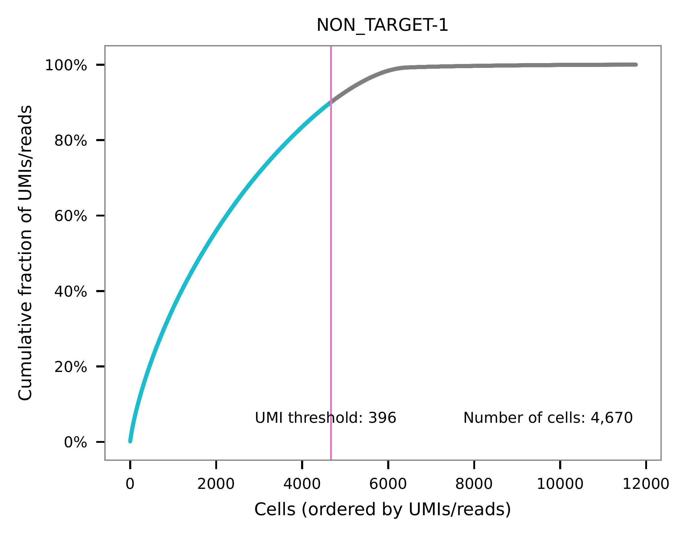{kind=link}

Method 2#
Cells are demultiplexed based on the abundance of features (sgRNAs).
Demultiplexing method 5 is implemented to use the local maxima on
the difference curve to detemine the knee point on the UMI saturation
curve.
$ fba demultiplex \
-i matrix_featurecount.csv.gz \
-dm 5 \
-v
2021-12-29 22:55:34,303 - fba.__main__ - INFO - fba version: 0.0.x
2021-12-29 22:55:34,303 - fba.__main__ - INFO - Initiating logging ...
2021-12-29 22:55:34,303 - fba.__main__ - INFO - Python version: 3.9
2021-12-29 22:55:34,303 - fba.__main__ - INFO - Using demultiplex subcommand ...
2021-12-29 22:55:36,774 - fba.__main__ - INFO - Skipping arguments: "-q/--quantile", "-cm/--clustering_method", "-p/--prob"
2021-12-29 22:55:36,774 - fba.demultiplex - INFO - Output directory: demultiplexed
2021-12-29 22:55:36,774 - fba.demultiplex - INFO - Demultiplexing method: 5
2021-12-29 22:55:36,774 - fba.demultiplex - INFO - UMI normalization method: clr
2021-12-29 22:55:36,774 - fba.demultiplex - INFO - Visualization: On
2021-12-29 22:55:36,774 - fba.demultiplex - INFO - Visualization method: tsne
2021-12-29 22:55:36,774 - fba.demultiplex - INFO - Loading feature count matrix: matrix_featurecount.csv.gz ...
2021-12-29 22:55:36,886 - fba.demultiplex - INFO - Number of cells: 11,758
2021-12-29 22:55:36,886 - fba.demultiplex - INFO - Number of positive cells for a feature to be included: 200
2021-12-29 22:55:36,904 - fba.demultiplex - INFO - Number of features: 2 / 2 (after filtering / original in the matrix)
2021-12-29 22:55:36,904 - fba.demultiplex - INFO - Features: NON_TARGET-1 RAB1A-2
2021-12-29 22:55:36,904 - fba.demultiplex - INFO - Total UMIs: 7,145,799 / 7,145,799
2021-12-29 22:55:36,913 - fba.demultiplex - INFO - Median number of UMIs per cell: 477.0 / 477.0
2021-12-29 22:55:36,913 - fba.demultiplex - INFO - Demultiplexing ...
2021-12-29 22:55:37,415 - fba.demultiplex - INFO - Generating heatmap ...
2021-12-29 22:55:38,576 - fba.demultiplex - INFO - Embedding ...
2021-12-29 22:55:57,485 - fba.__main__ - INFO - Done.
Heatmap of the relative abundance of features (sgRNAs) across all cells. Each column represents a single cell.

t-SNE embedding of cells based on the abundance of features (sgRNAs, no transcriptome information used). Colors indicate the sgRNA status for each cell, as called by FBA.
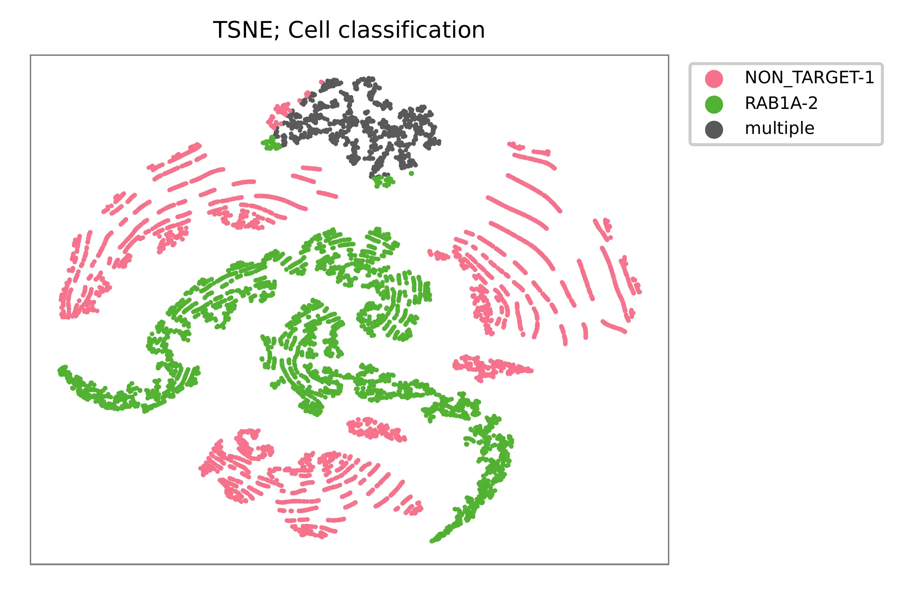{kind=link}
UMI distribution and model fitting threshold:
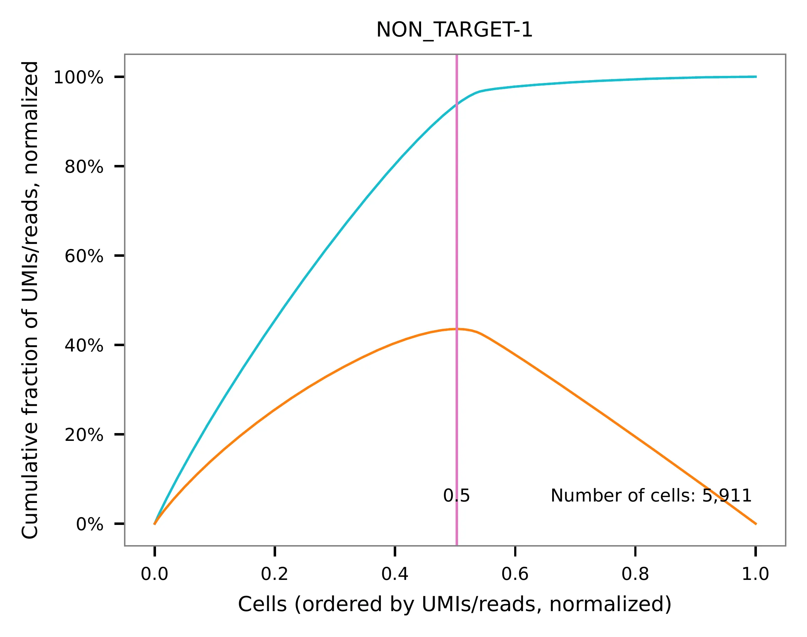{kind=link}